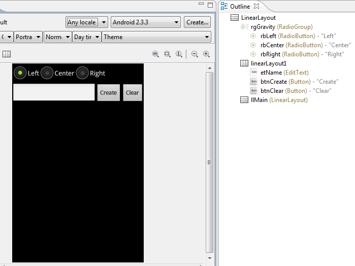
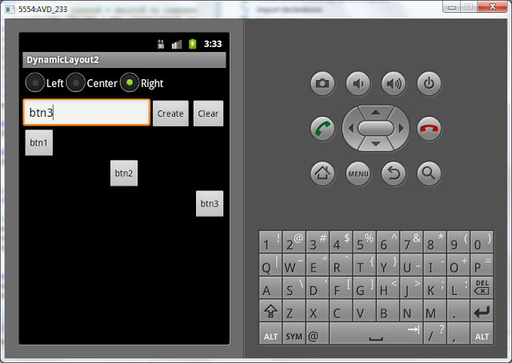
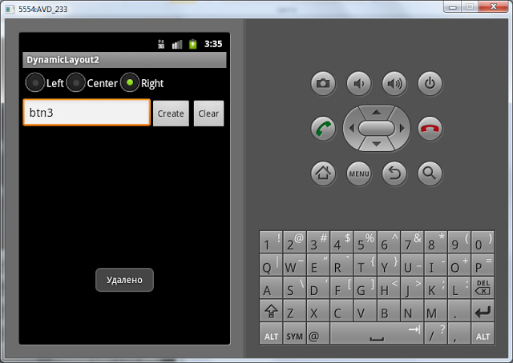

В этом уроке мы:
- добавляем компоненты на экран прямо из приложения
На прошлом уроке мы создавали компоненты в методе Activity.onCreate, т.е. при создании приложения. На этом уроке будем создавать уже в работающем приложении. Создавать будем Button-ы, т.к. они наглядней всего отображаются. Будем указывать текст, который будет отображен на кнопке и выравнивание: слева, по центру или справа. Также предусмотрим возможность удаления созданных элементов.
Создадим проект:
Project name: P0171_DynamicLayout2
Build Target: Android 4.0
Application name: DynamicLayout2
Package name: ru.startandroid.develop.dynamiclayout2
Create Activity: MainActivity
Создадим экран, который поможет нам создавать View-компоненты. Открываем main.xml и пишем там следующее:
<?xml version="1.0" encoding="utf-8"?>
<LinearLayout
xmlns:android="http://schemas.android.com/apk/res/android"
android:orientation="vertical"
android:layout_width="fill_parent"
android:layout_height="fill_parent">
<RadioGroup
android:layout_height="wrap_content"
android:layout_width="match_parent"
android:orientation="horizontal"
android:id="@+id/rgGravity">
<RadioButton
android:layout_height="wrap_content"
android:layout_width="wrap_content"
android:checked="true"
android:text="Left"
android:id="@+id/rbLeft">
</RadioButton>
<RadioButton
android:layout_height="wrap_content"
android:layout_width="wrap_content"
android:text="Center"
android:id="@+id/rbCenter">
</RadioButton>
<RadioButton
android:layout_height="wrap_content"
android:layout_width="wrap_content"
android:text="Right"
android:id="@+id/rbRight">
</RadioButton>
</RadioGroup>
<LinearLayout
android:id="@+id/linearLayout1"
android:layout_width="match_parent"
android:orientation="horizontal"
android:layout_height="wrap_content">
<EditText
android:layout_height="wrap_content"
android:layout_width="wrap_content"
android:layout_weight="1"
android:id="@+id/etName"
android:fadeScrollbars="true">
</EditText>
<Button
android:layout_width="wrap_content"
android:layout_height="wrap_content"
android:text="Create"
android:id="@+id/btnCreate">
</Button>
<Button
android:layout_width="wrap_content"
android:layout_height="wrap_content"
android:text="Clear"
android:id="@+id/btnClear">
</Button>
</LinearLayout>
<LinearLayout
android:layout_width="match_parent"
android:layout_height="match_parent"
android:id="@+id/llMain"
android:orientation="vertical">
</LinearLayout>
</LinearLayout>Рассмотрим подробно экран.
rgGravity – это RadioGroup, с тремя RadioButton (rbLeft, rbCenter, rbRight). Этот компонент мы используем для выбора выравнивания создаваемого компонента
etName – текстовое поле, здесь будем указывать текст, который будет отображаться на созданном компоненте
btnCreate – кнопка, запускающая процесс создания.
btnClear – кнопка, стирающая все, что создали
llMain – вертикальный LinearLayout, в котором будут создаваться компоненты

MainActivity.java. Начнем с того, что опишем и найдем все необходимые нам компоненты. Кстати, у нас есть пара кнопок, которые мы будем использовать, значит им нужен обработчик. В качестве обработчика назначим Activity (т.е. необходимо дописать: implements OnClickListener) и создадим пустой пока метод обработки onClick:
public class MainActivity extends Activity implements OnClickListener{
LinearLayout llMain;
RadioGroup rgGravity;
EditText etName;
Button btnCreate;
Button btnClear;
int wrapContent = LinearLayout.LayoutParams.WRAP_CONTENT;
/** Called when the activity is first created. */
@Override
public void onCreate(Bundle savedInstanceState) {
super.onCreate(savedInstanceState);
setContentView(R.layout.main);
llMain = (LinearLayout) findViewById(R.id.llMain);
rgGravity = (RadioGroup) findViewById(R.id.rgGravity);
etName = (EditText) findViewById(R.id.etName);
btnCreate = (Button) findViewById(R.id.btnCreate);
btnCreate.setOnClickListener(this);
btnClear = (Button) findViewById(R.id.btnClear);
btnClear.setOnClickListener(this);
}
@Override
public void onClick(View v) {
// TODO Auto-generated method stub
}
}Я также создал переменную wrapContent и буду хранить в ней значение LinearLayout.LayoutParams.WRAP_CONTENT. Делаю это только для снижения громоздкости кода.
Теперь опишем процесс создания Button-компонента заполнив метод onClick:
@Override
public void onClick(View v) {
switch (v.getId()) {
case R.id.btnCreate:
// Создание LayoutParams c шириной и высотой по содержимому
LinearLayout.LayoutParams lParams = new LinearLayout.LayoutParams(
wrapContent, wrapContent);
// переменная для хранения значения выравнивания
// по умолчанию пусть будет LEFT
int btnGravity = Gravity.LEFT;
// определяем, какой RadioButton "чекнут" и
// соответственно заполняем btnGravity
switch (rgGravity.getCheckedRadioButtonId()) {
case R.id.rbLeft:
btnGravity = Gravity.LEFT;
break;
case R.id.rbCenter:
btnGravity = Gravity.CENTER_HORIZONTAL;
break;
case R.id.rbRight:
btnGravity = Gravity.RIGHT;
break;
}
// переносим полученное значение выравнивания в LayoutParams
lParams.gravity = btnGravity;
// создаем Button, пишем текст и добавляем в LinearLayout
Button btnNew = new Button(this);
btnNew.setText(etName.getText().toString());
llMain.addView(btnNew, lParams);
break;
}
}Разберем написанное. Для начала мы проверяем, что была нажата кнопка btnCreate – т.е. кнопка создания. Затем создаем LayoutParams с высотой и шириной по содержанию. Здесь я использовал переменную, про которую писал выше – wrapContent. Иначе получилось бы довольно громоздко.
Далее создаем переменную btnGravity, в которую по умолчанию запишем значение выравнивания LEFT. Для определения, какой RadioButton выделен в данный момент, используем метод getCheckedRadioButtonId – он для RadioGroup возвращает ID «чекнутого» RadioButton-а. Мы его сравниваем с нашими тремя ID и заносим соответствующее значение в переменную btnGravity. Скидываем это значение в gravity у LayoutParams.
Далее создаем кнопку и присваиваем ей текст из etName. Обратите внимание, что недостаточно написать getText, т.к. это не даст текста. Необходимо еще вызвать метод toString. Ну и в конце добавляем созданный Button в наш LinearLayout.
Сохраним все и запустим приложение. Добавим несколько кнопок.

Кнопки должны появляться с указанным выравниванием и текстом.
Когда вводите текст, снизу появляется клавиатура и закрывает обзор. Чтобы она исчезла, надо нажать кнопку Back (Назад) на эмуляторе или ESC на обычной клавиатуре. Если клавиатура появляется японская с иероглифами, вызовите контекстное меню для поля ввода (долгое нажатие левой кнопкой мыши), нажмите Input method и выберите из списка Android Keyboard.
Осталось нереализованной кнопка Clear, которая призвана удалять все созданное. Для этого нам необходимо дополнить метод onClick, добавим в switch (v.getId()) еще один case:
case R.id.btnClear:
llMain.removeAllViews();
Toast.makeText(this, "Удалено", Toast.LENGTH_SHORT).show();
break;Метод removeAllViews удаляет все дочерние View-компоненты с нашего LinearLayout. С помощью Toast выводим на экран сообщение об успехе. Сохраним, запустим и проверим. Добавляем несколько кнопок, жмем кнопку Clear и наблюдаем результат:

В итоге у нас получилось очень даже динамическое приложение, которое умеет менять само себя.
На форуме задают вопрос: как потом получить доступ к этим созданным компонентам. Тут есть пара простых вариантов.
1) При создании вы можете сами присваивать компонентам ID. Это делается методом setId. И потом по этим ID просто вызываете findViewById.
2) Вы можете сохранять созданные компоненты в свой массив или список. Либо можете воспользоваться методом getChildAt. Вызов этого метода для llMain позволит получить его дочерние компоненты по индексу. Получить кол-во дочерних элементов позволит метод getChildCount.
Полный код урока:
public class MainActivity extends Activity implements OnClickListener {
LinearLayout llMain;
RadioGroup rgGravity;
EditText etName;
Button btnCreate;
Button btnClear;
int wrapContent = LinearLayout.LayoutParams.WRAP_CONTENT;
/** Called when the activity is first created. */
@Override
public void onCreate(Bundle savedInstanceState) {
super.onCreate(savedInstanceState);
setContentView(R.layout.main);
llMain = (LinearLayout) findViewById(R.id.llMain);
rgGravity = (RadioGroup) findViewById(R.id.rgGravity);
etName = (EditText) findViewById(R.id.etName);
btnCreate = (Button) findViewById(R.id.btnCreate);
btnCreate.setOnClickListener(this);
btnClear = (Button) findViewById(R.id.btnClear);
btnClear.setOnClickListener(this);
}
@Override
public void onClick(View v) {
switch (v.getId()) {
case R.id.btnCreate:
// Создание LayoutParams c шириной и высотой по содержимому
LinearLayout.LayoutParams lParams = new LinearLayout.LayoutParams(
wrapContent, wrapContent);
// переменная для хранения значения выравнивания
// по умолчанию пусть будет LEFT
int btnGravity = Gravity.LEFT;
// определяем, какой RadioButton "чекнут" и
// соответственно заполняем btnGravity
switch (rgGravity.getCheckedRadioButtonId()) {
case R.id.rbLeft:
btnGravity = Gravity.LEFT;
break;
case R.id.rbCenter:
btnGravity = Gravity.CENTER_HORIZONTAL;
break;
case R.id.rbRight:
btnGravity = Gravity.RIGHT;
break;
}
// переносим полученное значение выравнивания в LayoutParams
lParams.gravity = btnGravity;
// создаем Button, пишем текст и добавляем в LinearLayout
Button btnNew = new Button(this);
btnNew.setText(etName.getText().toString());
llMain.addView(btnNew, lParams);
break;
case R.id.btnClear:
llMain.removeAllViews();
Toast.makeText(this, "Удалено", Toast.LENGTH_SHORT).show();
break;
}
}
}